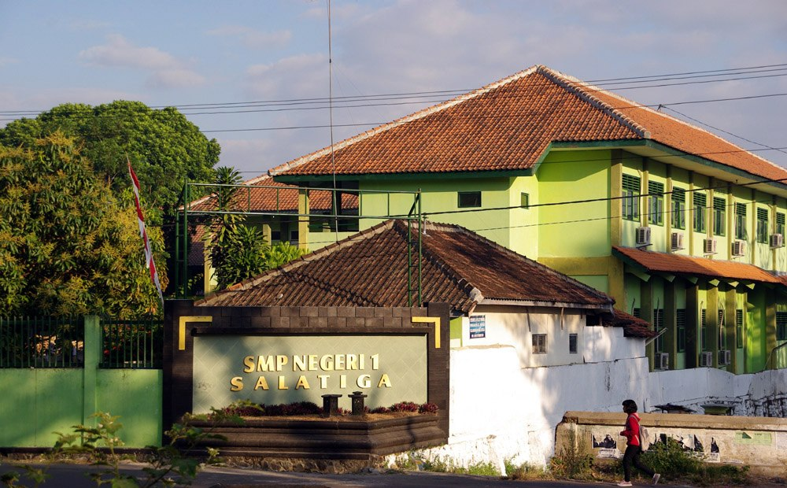

SMP Negeri 1 Salatiga merupakan salah satu sekolah menengah pertama negeri yang berada di Kota Salatiga, Jawa Tengah. Sekolah ini berada di bawah naungan Dinas Pendidikan dan menjadi bagian dari sistem pendidikan formal pemerintah. Sebagai SMP negeri, SMPN 1 Salatiga melayani jenjang pendidikan untuk siswa usia remaja awal setelah lulus dari sekolah dasar, dengan proses belajar mengajar yang mengikuti kalender dan aturan pendidikan nasional.

Dalam kegiatan sehari-hari, SMP Negeri 1 Salatiga menerapkan Kurikulum Nasional yang berlaku, lengkap dengan mata pelajaran umum seperti Matematika, Bahasa Indonesia, IPA, IPS, Bahasa Inggris, serta Pendidikan Pancasila dan Kewarganegaraan. Proses pembelajaran dilakukan secara tatap muka di ruang kelas, didukung oleh guru-guru yang berstatus pendidik resmi. Seperti sekolah negeri pada umumnya, kegiatan sekolah juga mencakup upacara bendera, penilaian berkala, serta berbagai program pembinaan akademik dan nonakademik yang terjadwal.
Dari segi fasilitas, SMP Negeri 1 Salatiga memiliki sarana pendukung pembelajaran seperti ruang kelas, perpustakaan, laboratorium, ruang guru, serta area sekolah yang digunakan untuk kegiatan siswa.
Lingkungan sekolah berada di kawasan perkotaan Salatiga, sehingga cukup mudah diakses dari berbagai wilayah di kota tersebut. Secara umum, SMP Negeri 1 Salatiga berfungsi sebagai institusi pendidikan dasar tingkat menengah yang menjalankan perannya sesuai standar sekolah negeri di Indonesia.